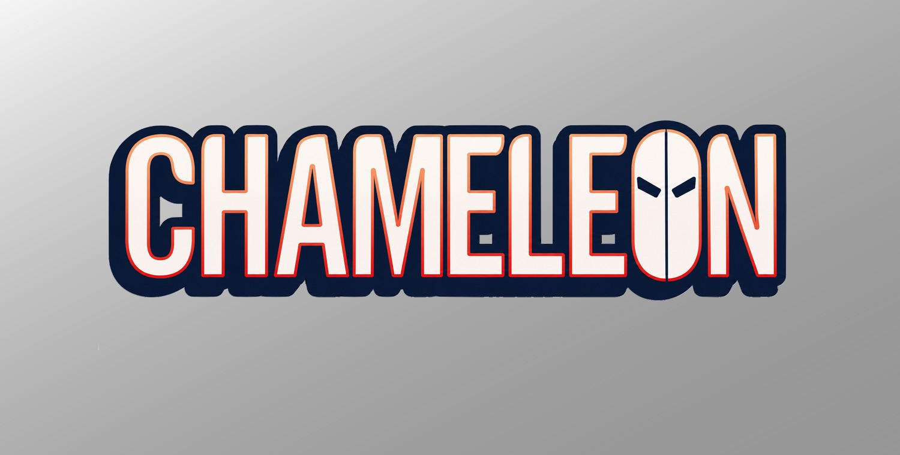
Le Caméléon (Dmitri Smerdyakov) (Terre-616)
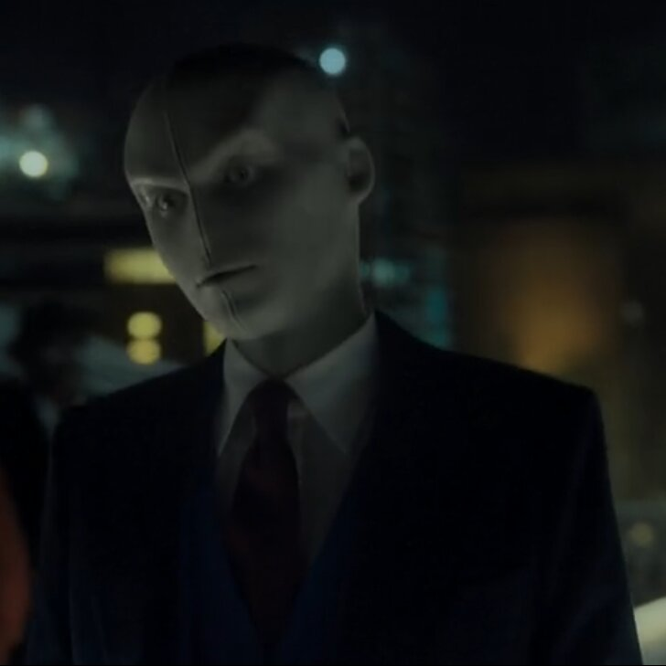
Origines :
Originaire de Russie, Dmitri Smerdyakov est le demi-frère illégitime de Sergei Kravinoff, alias Kraven le Chasseur, par sa mère.
Son père le détestait, et sa mère n’avait que très peu d'affection pour lui, lui préférant son demi-frère, et ce dernier se montrait souvent dur avec lui.
Son seul ami, Joe Cord, le sauva d'un accès de colère de Sergei, ce qui le marqua psychologiquement profondément et il en vint même à croire que c'est avec Sergei qu'il avait été ami.
Dans sa jeunesse, il travailla son don d'imitation pour impressionner son frère et toutes ses relations, allant même jusqu'à réprimer sa propre identité.
Un jour, il fut approché par un homme appelé Gustav Fiers, impressionné par le talent de Dmitri, et l'emmena voir son frère Karl, le Finisseur.
Karl entraîna Dmitri dans une école privée, et il quitta le domaine Kravinoff sans dire au revoir, pas même à son demi-frère.
L'académie de Fiers entraînait d'autres enfants à devenir des imitateurs et des agents dormants surnommés les Caméléons, et étant le plus doué, Dmitri conserva le nom du Caméléon pour lui-même, en complétant ses capacités par du maquillage et des costumes afin de changer d'identité.
Lors de sa première mission, le Caméléon se rendit aux États-Unis et se fit passer pour le Professeur Newton pour dérober les plans d'un système anti-missile et tenta de mettre le vol sur le dos de Spider-Man, mais le héros captura le Caméléon et conserva sa bonne réputation.
Après plusieurs mois de déportation, le Caméléon retourna à New-York grâce à de faux papiers.
Pour se venger de Spider-Man, il fit appel à son frère, Kraven le Chasseur.
Mais les frères furent battus, et Kraven devint alors un adversaire implacable du héros.
Dmitri tenta ensuite d'infiltrer les Avengers en se faisant passer pour Captain America, mais son complot échoua et il fut arrêté par Giant-Man.
Sans argent, il travailla pour l'Hydra, le Leader ou encore les frères Lobo.
Dans ses périodes de solitudes, il essaya encore de nuire à Spider-Man et braqua plusieurs banques, se heurtant parfois à d'autres héros comme Daredevil.
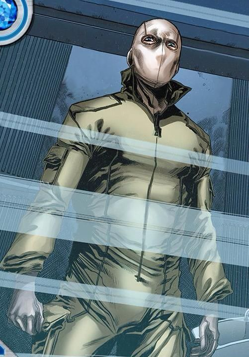
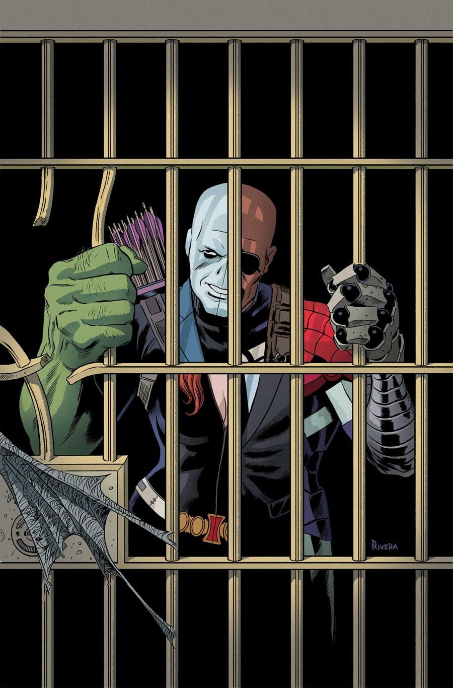
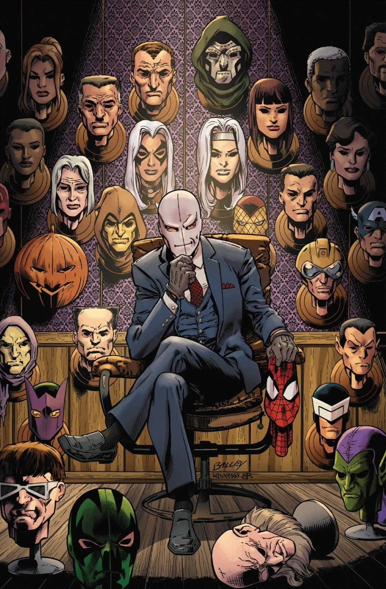
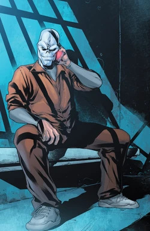
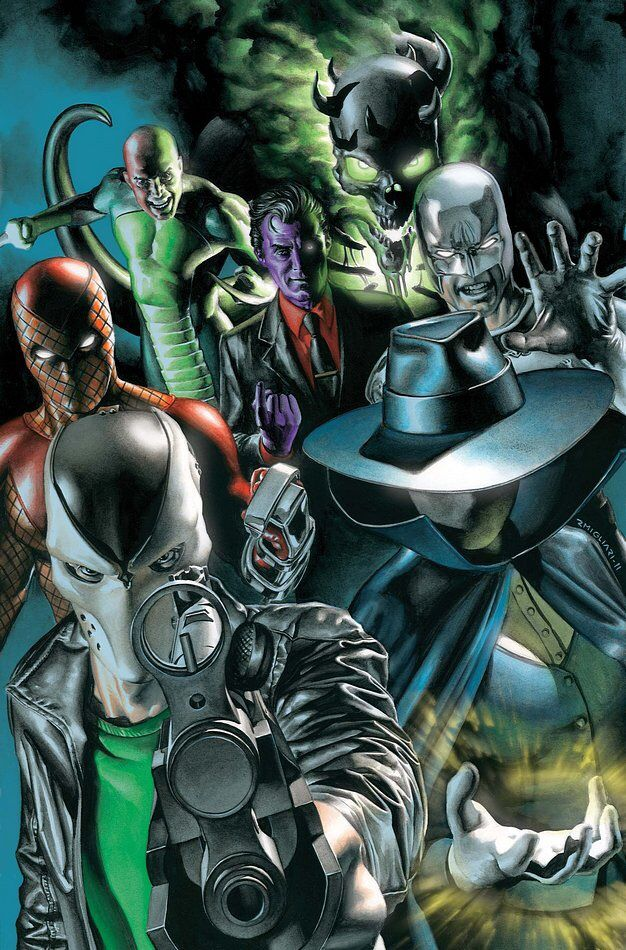
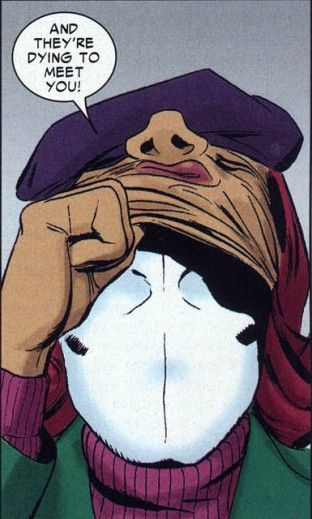
Capacités :
Dmitri est un espion et un maître du déguisement.
A l'origine, le Caméléon ne possédait aucun super-pouvoir, il utilisait simplement des masques en latex hyper-réalistes, avec du maquillage ainsi que des costumes spéciaux.
Il est également capable de reproduire les voix, les accents, et la manière de parler de tous ceux qu'il imite.
Par la suite, il a bénéficié de traitements et de sérums qui ont rendu sa peau plus malléable, lui permettant de modifier directement sa propre apparence presque à volonté et de reproduire le visage de n'importe qui, sans avoir à porter de masque.
En revanche, il ne peut copier que l'apparence, mais pas les pouvoirs qui vont avec. Pour ça, il a besoin d'accessoires.


Apparence :
Sous son apparence « non-déguisée », le Caméléon porte généralement une combinaison moulante verte, où alors un costume-cravate, accompagné d'une ceinture utilitaire, et des gants et bottes assortis.
L'élément le plus reconnaissable est son masque blanc vierge, ressemblant à un visage humain figé avec des traits lisses et inexpressifs.
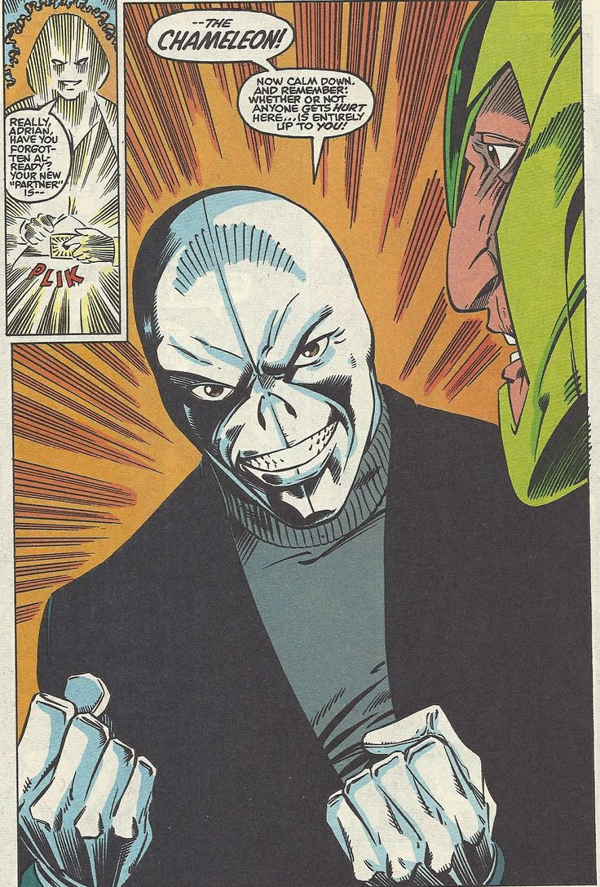
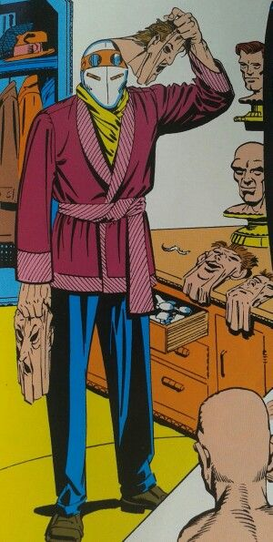
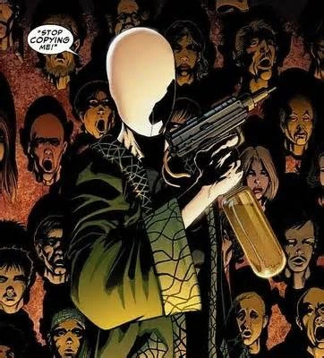
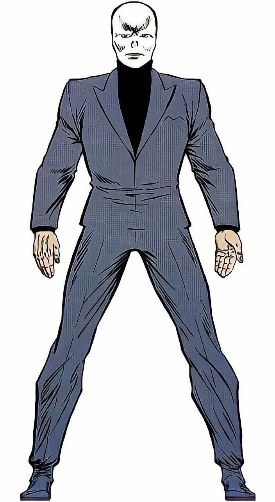
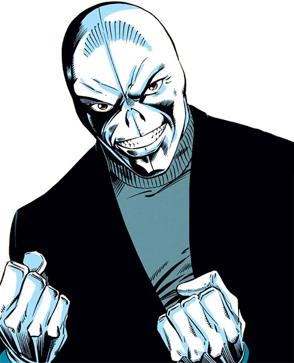
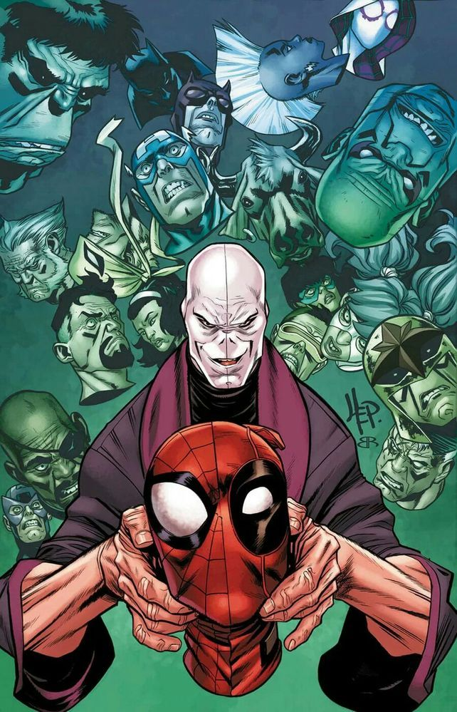
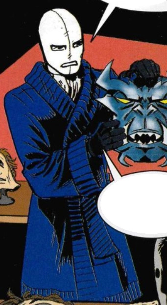
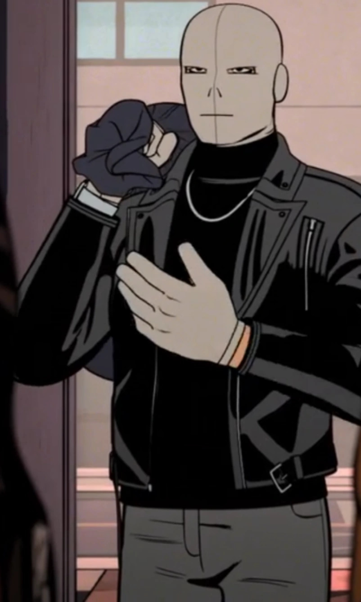
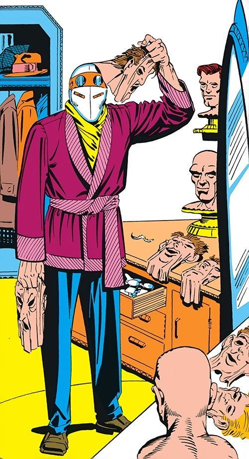